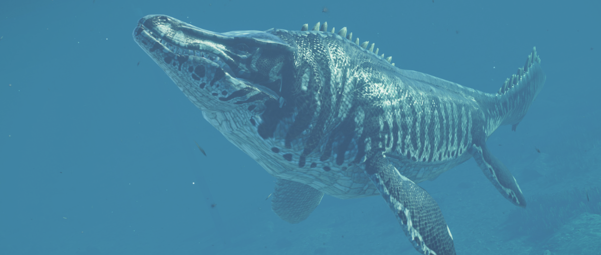

O Tilossauro é um grande réptil marinho que existiu pela primeira vez no Mar Interior Ocidental que percorria os Estados Unidos e Canadá durante o período Cretáceo Superior. Com mais de 14 m de comprimento, ele é um dos maiores mosassauros que já existiram e foi o predador apical de seu ambiente marinho. Estudos mostraram que ele se alimentava de tubarões, plesiossauros e até mesmo de outros mosassauros.